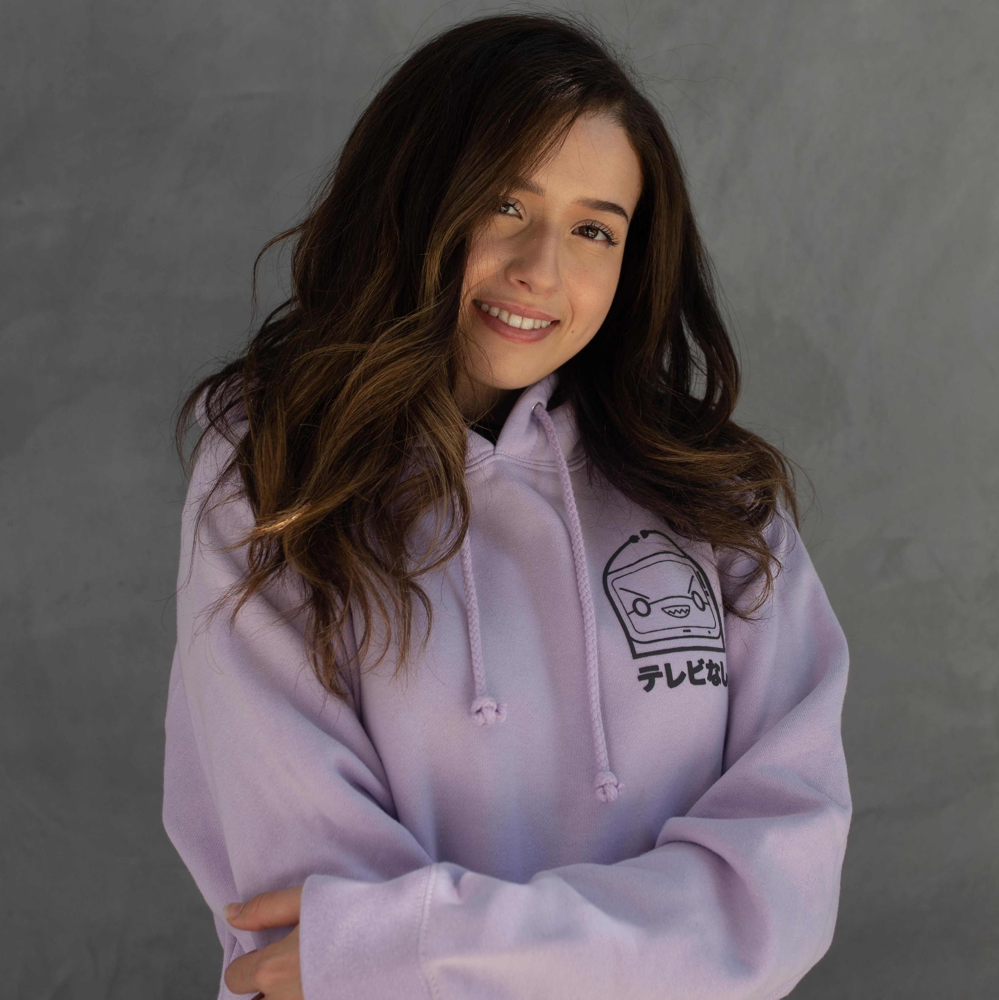
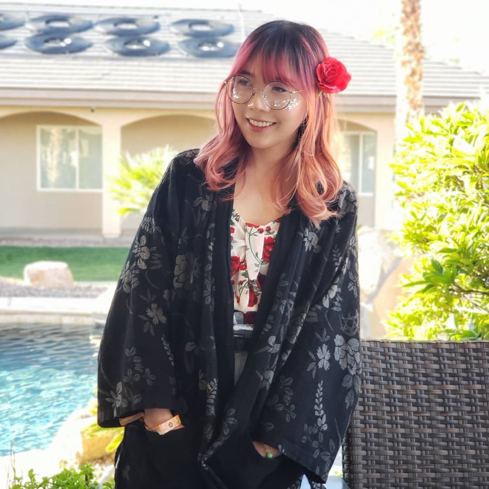
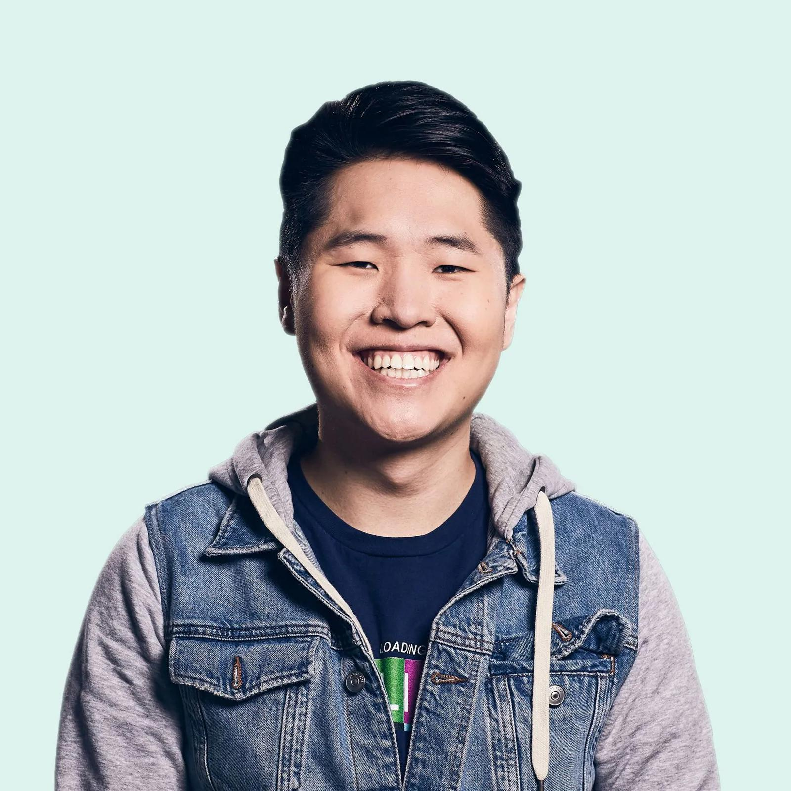
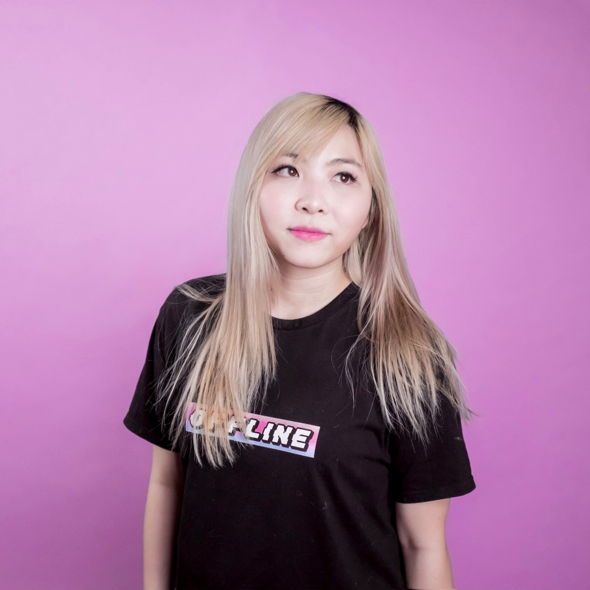
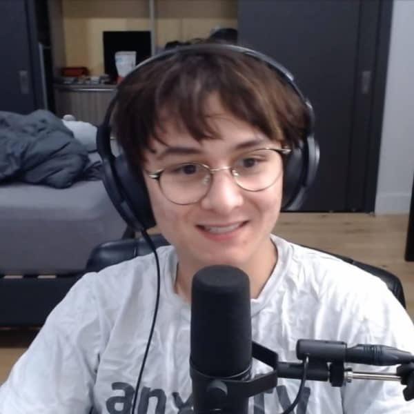

|
Scarra William Jimmy Li, better known by his alias Scarra, is an American Twitch streamer and former pro League of Legends player. He is most well known for being the mid laner for Team Dignitas and previously support for Meme Stream Dream Team.. Scarra is a co-founder of OfflineTV, along with his then-manager Chris Chan. |
|
|  |
Pokimane Imane Anys, better known by her alias Pokimane, is a Moroccan Canadian Twitch streamer, YouTube personality, and gamer. Anys is best known for her live streams on Twitch, where she showcases her gaming experiences—most notably with League of Legends and Fortnite. Anys lived in the OfflineTV house until June of 2020 and subsequently moved in with fellow streamers, namely Valkyrae, in the following month. |
|  |
Lily Pichu Lily Ki, also known as LilyPichu, is an American Twitch streamer, musician, and YouTube personality. Lily gained popularity in 2011 when she released her song "I'll Quit LoL," amassing over 7 million views on YouTube. Her YouTube channel consists of animations, vlogs, songs, art, and piano covers while her Twitch stream consists of League of Legends, IRL content, art, and music. |
|  |
Disguised Toast Jeremy Wang, better known by his alias Disguised Toast, is a Canadian Twitch streamer who rose to fame playing Hearthstone. He got his alias from a Hearthstone card named SI:7 Agent, whose saying when played is "This guy's toast," which the community joked that it sounded like "disguised toast" instead. Wang began his activity in the Hearthstone community by making infographics and YouTube videos of unusual card interactions that he shared on Reddit. Wang covered his face with a toast-shaped cardboard mask with sunglasses when he began streaming until he revealed his face by mistake in October 2016. In October 2017, Wang joined OfflineTV. |
|  |
Yvonnie Yvonne Ng, also known as Yvonnie, is a Canadian Twitch streamer. She is the current house manager for OfflineTV. She joined the group in 2018 after being a friend to Pokimane for several years. On January 31, 2020, however, Yvonne started uploading IRL videos on her YouTube channel, yvonnie. |
|  |
Michael Reeves Michael Reeves is an American Twitch streamer and YouTube personality known for his comedic engineering videos and eccentric on-camera persona. Michael previously worked as a software developer in Hawaii. His first video, "The Robot That Shines a Laser in Your Eye" posted in April 2017, went viral. Since then, he has become known for his humorous yet complex and technically impressive projects. He made his debut into Twitch streaming in June 2020, where he streams both video games and technology work. After much speculation, he was officially announced as a member of OfflineTV in December 2019. |